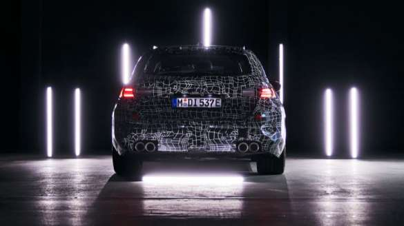

To oficjalne: wraz z nową edycją BMW M5 po raz pierwszy od 2007 roku pojawi się wariant Touring odnoszącego sukcesy modelu M. Idealna symbioza typowych dla M wysokich osiągów, bezkompromisowego komfortu na długich trasach i imponującej przestrzeni w wyższej klasie premium przeżyje renesans w 2024 roku wraz z nowym BMW M5 Touring.
TESTY WYTRZYMAŁOŚCIOWE.
Pomimo, że prototyp jest starannie zakamuflowany to nie jest w stanie ukryć swojego agresywnego charakteru prawdziwej litery M. Nowe BMW M5 Touring weszło w praktyczną fazę procesu rozwoju seryjnego. Ten wyczynowy model przechodzi jazdy próbne na drogach publicznych, na torach testowych BMW Group i na torach wyścigowych na całym świecie.
NOWY NAPĘD M, TYPOWA WYDAJNOŚĆ.
BMW M5 Touring będzie miało całkowicie nowy, częściowo zelektryfikowany napęd. Charakterystyka osiągów typowa dla M oraz precyzyjnie do niego dopasowana technologia zawieszenia i udoskonalona innowacyjnymi systemami zapewniają dynamikę jazdy i zwinność na poziomie unikalnym w tej klasie pojazdów. W ten sposób BMW M GmbH postępuje na drodze do elektryfikacji.
HISTORIA BMW M5 TOURING.
BMW M5 od prawie 40 lat wyznacza standardy dynamiki jazdy, zwinności i precyzji w segmencie wyczynowych sedanów i modeli Touring. Ewolucyjny postęp, know-how z wyścigów i przełomowe innowacje w dziedzinie napędu, podwozia, aerodynamiki i lekkiej konstrukcji charakteryzują historię BMW M5. Sześcio-, ośmio- i dziesięciocylindrowe silniki, technologia M TwinPower Turbo i wysokie obroty, złożony układ hamulcowy z karbonowo-ceramicznymi hamulcami M oraz napęd na wszystkie koła M xDrive to tylko niektóre z technologicznych kamieni milowych, z którymi łączy się ten model maksymalna wydajność w pojeździe o wysokich osiągach była wielokrotnie definiowana na nowo. Na tym opiera się trzecia generacja BMW M5 Touring – z fascynującymi innowacjami zapewniającymi jeszcze intensywniejsze doznania z osiągów.